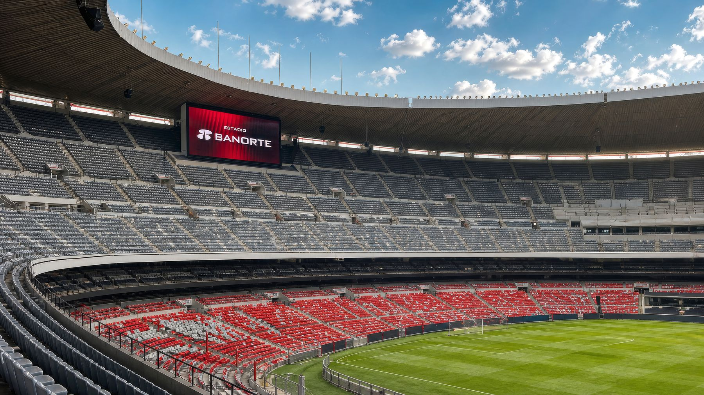
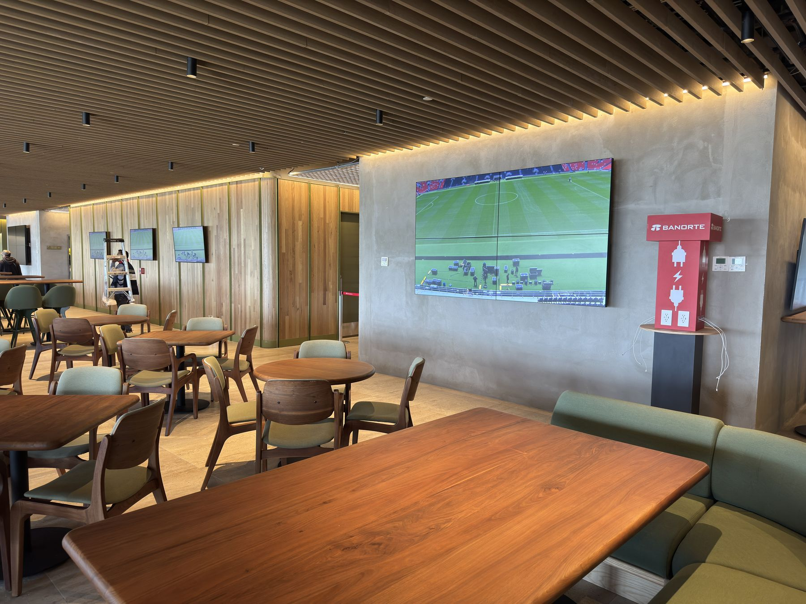
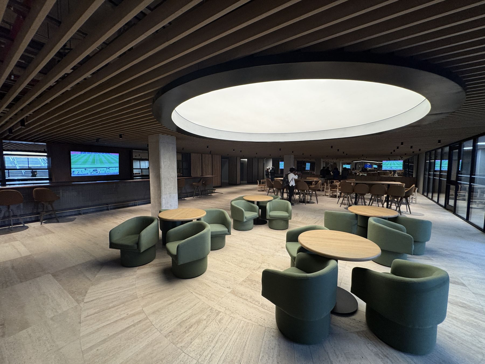
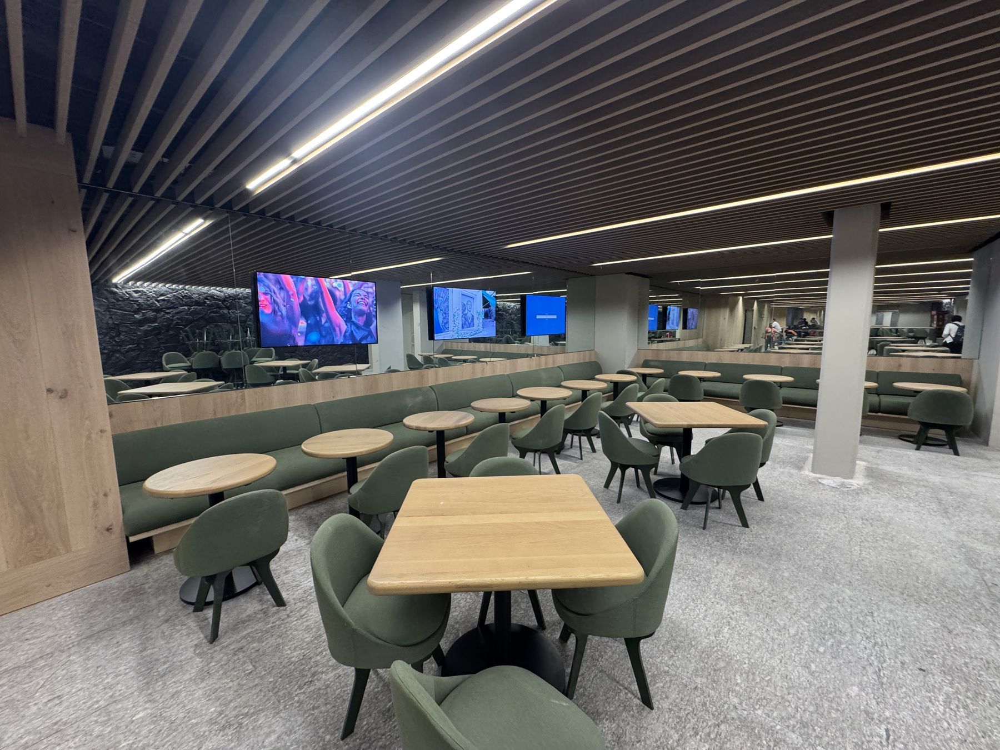
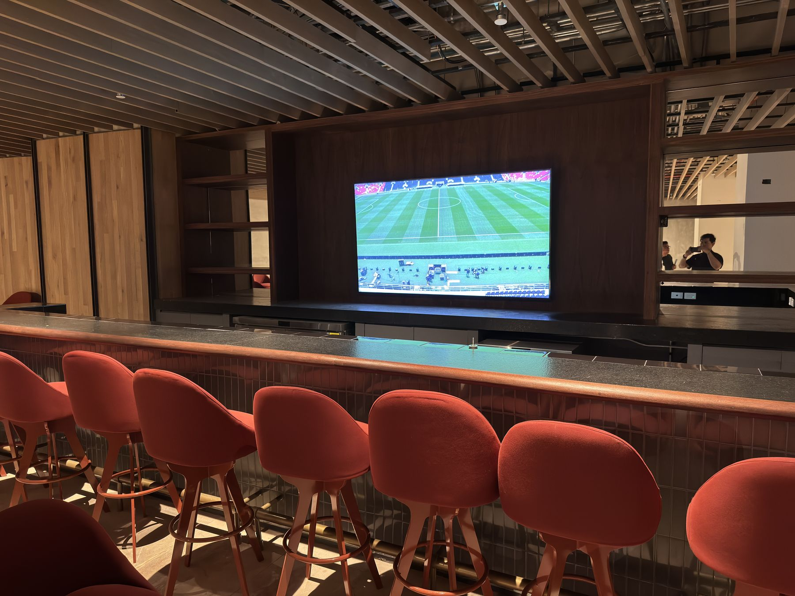
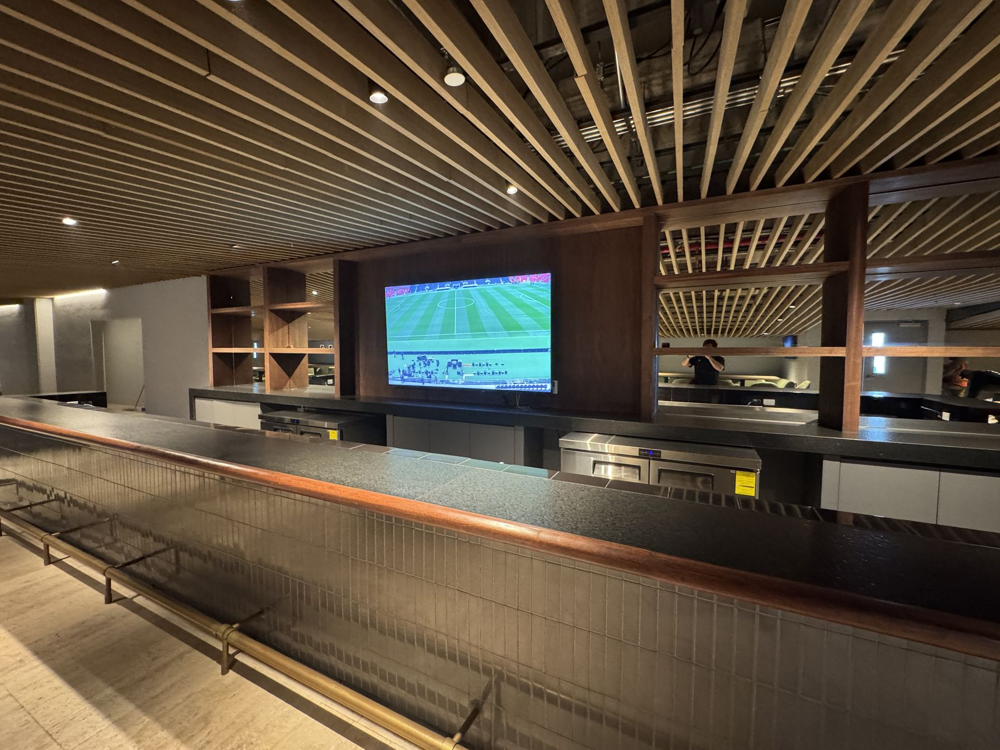
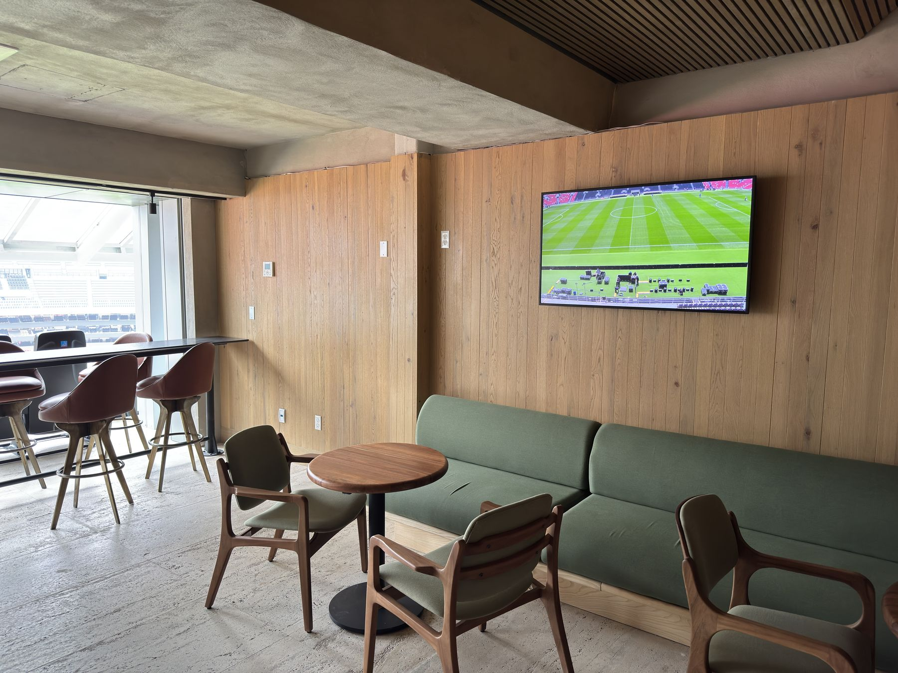
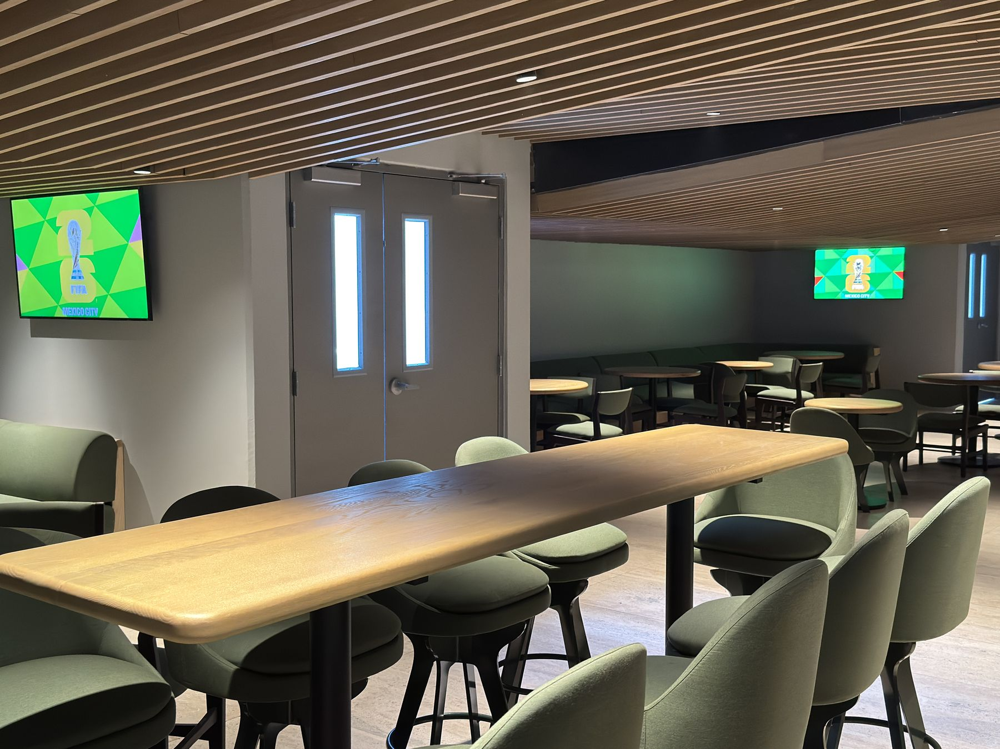
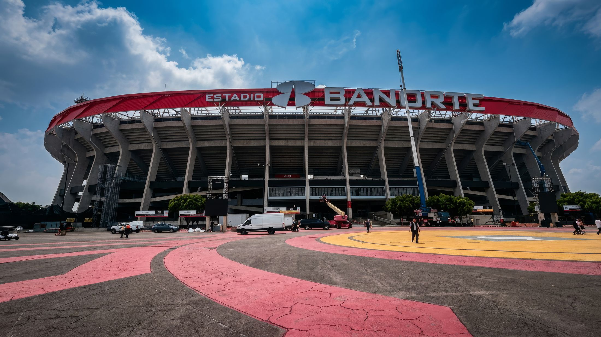

El Estadio Banorte, el emblemático Estadio Azteca, vivió en 2026 una de las renovaciones más ambiciosas de su historia. Como parte de esa transformación, POP Media Technology diseñó e integró la red interna de pantallas que lleva la señal del partido, las repeticiones y los contenidos de marca a los palcos, lounges y zonas exclusivas del inmueble.
La solución es una red AV sobre IP de 10G, unificada y basada en el estándar SDVoE, que distribuye video de cualquier fuente a cualquier pantalla del estadio. Por su escala, se trata de la red SDVoE 10G de un solo sistema más grande del mundo.


En un inmueble de esta escala, cada palco debe recibir la acción en el mismo instante que la cancha, con calidad de transmisión y sin retrasos perceptibles. La operación, además, necesita cambiar contenidos en segundos: del partido en vivo a la repetición, al patrocinador o a la señal de televisión, en cientos de pantallas a la vez.
POP MT respondió con una arquitectura de video sin compresión perceptible, latencia menor a 2 milisegundos y capacidad de crecer sin rediseñar la red.
La red se construyó sobre switches MXnet 10G de AVPro Edge, con fibra óptica hacia nueve cuartos de distribución (IDF) alrededor del estadio. Desde la sala de control, el equipo de producción decide qué se ve en cada pantalla, en cada zona, en tiempo real.
La red quedó dimensionada desde el primer día para crecer a más de 2,000 puntos finales sin cambiar su arquitectura.
El resultado se vive en cada palco y en cada lounge: pantallas integradas al nuevo diseño interior, que muestran el partido, las repeticiones y los contenidos de la marca con la misma calidad que la transmisión oficial.
POP MT acompañó el proyecto desde la ingeniería y la instalación en obra hasta la puesta en marcha en la sala de control, junto con sus aliados tecnológicos Bestel, AVPro Edge y Samsung.







Diseñamos e integramos redes AV sobre IP para estadios, arenas y recintos de gran formato.